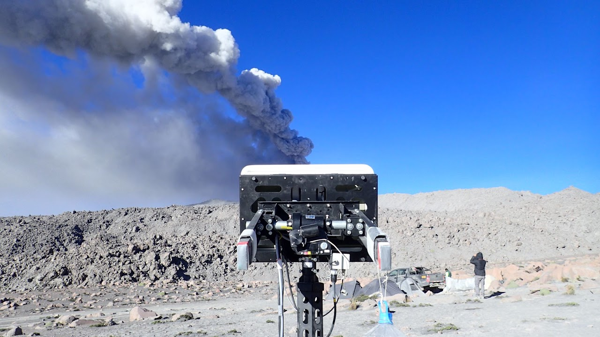
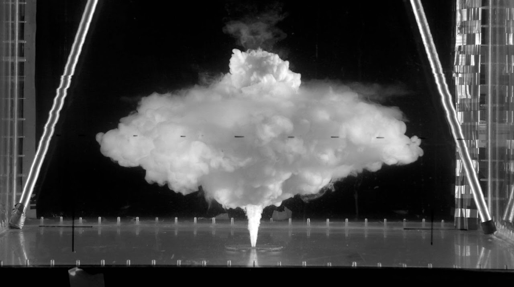
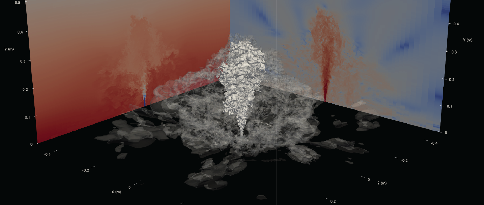

Volcanology
Explosive volcanic eruptions inject hot mixtures of ash, gas, lithics and pumices that can rise as volcanic plumes and spread as umbrella ash clouds in the atmosphere or collapse into deadly pyroclastic density currents. Small eruptions create ashfall and pyroclastic density current hazards to local communities and aircraft at tens of volcanoes every day across the globe. Less frequent but deadlier large eruptions, such as Mt. St. Helens 1980 and Pinatubo 1991, form eruption columns where erupted mass can be delivered to umbrella ash clouds and pyroclastic density currents simultaneously. Large eruptions can disrupt global society if they occur near key global trading routes and ports, or if they cause abrupt cooling by delivering teragrams of sulfur gases to the stratosphere. My research uses field and remote-sensing observations, analog experiments, and numerical simulations to understand the multiphase turbulent fluid dynamics governing how mass is transported to the atmosphere, ground and oceans during eruptions of all sizes. Ultimately, my goal is to establish a new eruption classification that can predict distinct eruption hazards and their evolution during an eruption.
Key research questions
- What particle-fluid scale processes govern the partitioning of mass in eruption columns between ash clouds and pyroclastic density currents during an eruption?
- How do fluctuations in mass flux at the vent influence the gravitational stability of eruption columns and the rise height of volcanic plumes?
- How does the particle size distribution erupted from the vent influence the dynamics of column collapse?
Methods & data
I combine remote-sensing of eruptions, scaled laboratory experiments, and computational fluid dynamics simulations to test theoretical models of eruption dynamics.



Related publications
-
Submarine terraced deposits linked to periodic collapse of caldera-forming eruption columnsNature Geoscience · 2023 · Vol. 16, pp. 391–397
-
Sediment waves and the gravitational stability of volcanic jetsBulletin of Volcanology · 2021 · Vol. 83, Art. 64
-
Are eruptions from linear fissures and caldera ring dykes more likely to produce pyroclastic flows?Earth and Planetary Science Letters · 2016 · Vol. 454, pp. 142-153